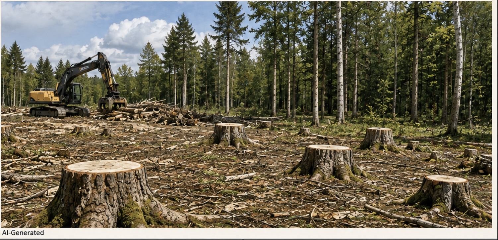

🏠 Accueil PSE›CAPa JP&HORT›ESC›Les médias de masse
Fiche de révision · CAP agricole — ESC
Les médias de masse
Comment se construit ce que je sais du monde
Face à un titre, un message ou une image, savoir vérifier avant de croire et de partager.
CG1.1CCF1MG1
Avant de commencerOn analyse des messages, pas des personnes. Avoir relayé une rumeur ne rend personne bête ou naïf : tout le monde le fait, et c'est justement pour ça qu'on apprend à vérifier. Personne n'a à dire ce qu'il regarde, lit ou partage.
Ce que je dois savoir
1Distinguer un fait, une opinion et une rumeur
2Vérifier une information en remontant à la source
3Analyser un titre, une image et sa légende
4Prendre position face à une rumeur ou un partage massif
Fait, opinion, rumeur
Trois statuts différents
Fait — Vérifiable
Vérifiable dans une source
Une délibération publique, une donnée officielle
On peut le retrouver : un nom, une date, un numéro
« Le conseil municipal a voté l'abattage de 72 arbres le 12 mars. »
Opinion — Discutable
Jugement personnel
Elle est légitime — à condition d'être signalée comme une opinion
On peut ne pas être d'accord
« Je trouve que la commune aurait dû en conserver davantage. »
Rumeur — Invérifiable
Sans auteur identifiable
Sans date, sans source vérifiable
Elle circule de personne à personne
« Il paraît qu'ils vont tout raser pour construire un parking. »
Le piège le plus fréquent
Une opinion présentée comme un fait. En disant « la commune détruit le parc » au lieu de « je trouve que… », on retire au lecteur la possibilité d'en discuter. Ce n'est plus un avis qu'on peut contredire : c'est présenté comme une vérité.
Vérifier une information
Quatre questions, dans cet ordre
Qui
Qui le dit ? Un nom, un organisme, une personne identifiable — ou personne ?
Quand
De quand date l'information ? Une information vraie hier peut être fausse aujourd'hui.
Comment
Comment le sait-on ? Constaté, mesuré, entendu dire ?
Vérifiable
Qu'est-ce qui est vérifiable ? On remonte à la source : document public, organisme officiel, avec un nom, une date, un numéro.
« Partagez vite »Un appel pressant à partager avant suppression est un signal d'alerte typique d'une rumeur.
Beaucoup de partagesUn grand nombre de partages ne prouve pas qu'une information est vraie — seulement qu'elle a été transmise.
Aucun auteur« On dit que », « il paraît que », « un ami d'un ami » : personne à qui remonter.
Titres et angles
Deux titres exacts, un seul chantier
70 % des arbres conservés
Presse locale · 14 mars
Le chantier du parc municipal préserve l'essentiel des sujets existants.
30 % des arbres abattus
Réseau social · 14 mars
Le parc municipal va perdre près d'un tiers de ses arbres.
On remonte à la source — délibération du conseil municipal, 12 mars.
240arbres au total
168conservés — soit 70 %
72abattus — soit 30 %
Les deux titres sont exacts. Aucun ne ment. Chacun choisit un angle et ne dit pas tout : l'un met en avant ce qui reste, l'autre ce qui disparaît. Pour comprendre, il faut remonter aux chiffres complets de la source — et là seulement, on peut se faire un avis.
Image et légende
La même photo, deux lectures

Illustration — spécimen pédagogique
Légende A
« Le chantier a commencé : les premières souches apparaissent. »
Décrit ce que l'on voit, sans expliquer pourquoi.
Légende B
« Abattage sanitaire : les sujets malades sont retirés, 168 arbres sont conservés. »
Ajoute une cause et un chiffre — qui ne se voient pas sur l'image.
Une photographie montre un état, jamais ses causes ni les intentions de qui que ce soit. C'est la légende qui interprète — et une même image peut en recevoir plusieurs. Se méfier d'une image sortie de son contexte. Et ici ? Cette image est une illustration, pas une photographie : aucun lieu, aucune date, aucun auteur. Elle ne prouve donc rien du tout — pas même l'état qu'elle montre. Première question à poser devant n'importe quelle image : d'où vient-elle ?
Face à une rumeur
Réflexe 1 · Ne pas retransmettre en l'état
Même « pour prévenir ». Transmettre, c'est amplifier — et c'est ce qui fait vivre une rumeur.
Réflexe 2 · Appliquer les quatre questions
Qui, quand, comment, qu'est-ce qui est vérifiable. Puis chercher une source publique et datée.
Réflexe 3 · Répondre sans accuser
Celui qui a transmis l'a souvent fait de bonne foi. On corrige l'information, on ne met pas la personne en cause.
Après avoir vérifié, on prend position — en quatre temps
Complément — objectif 4 : prendre position
Je pense que…
« Je pense que cette publication est trompeuse. »
… parce que…
« …parce qu'elle donne un seul chiffre sur deux. »
Par exemple…
« La délibération du 12 mars indique 240 arbres, dont 168 conservés. »
Donc…
« Donc je ne la partage pas, et je réponds avec le lien de la délibération. »
AttentionVérifier ne consiste pas à croire l'inverse. Qu'un titre soit partiel ne rend pas le titre opposé plus vrai : seuls les chiffres complets de la source tranchent.
Le vocabulaire
Rumeur — Information circulant sans auteur identifiable, sans date et sans source vérifiable.
Fait — Information vérifiable dans une source fiable.
Opinion — Jugement personnel, discutable, légitime quand il est signalé comme tel.
Source — Origine vérifiable d'une information : document public, organisme officiel, daté et signé.